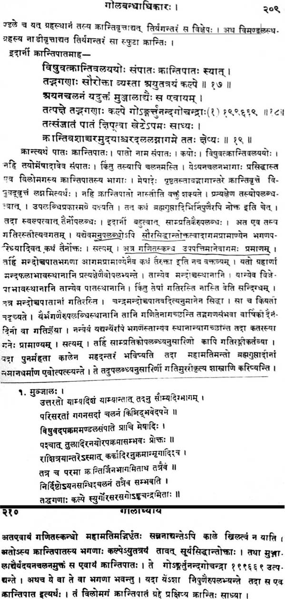
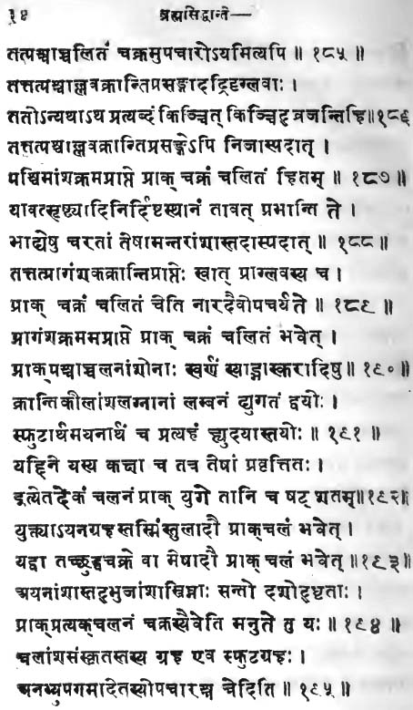
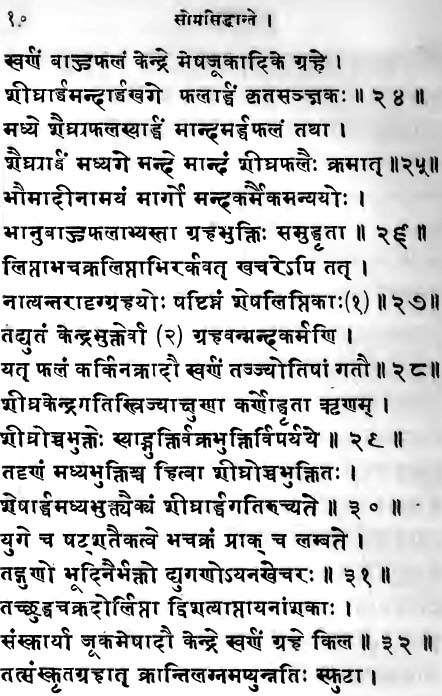
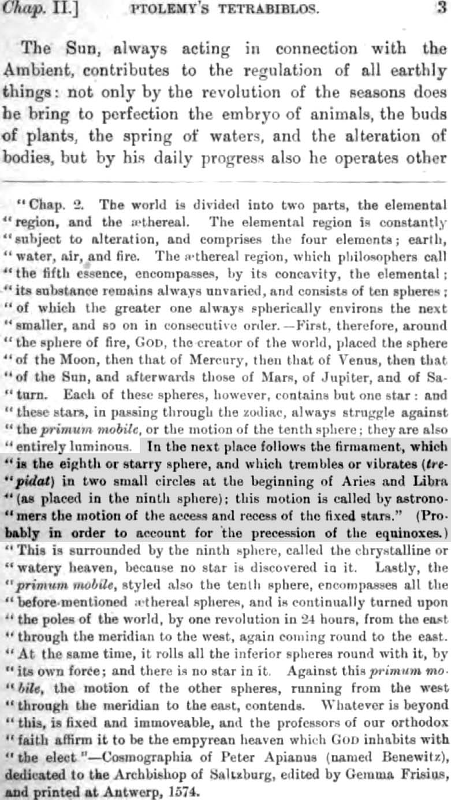
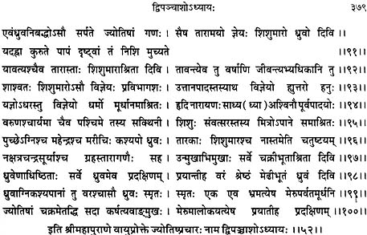
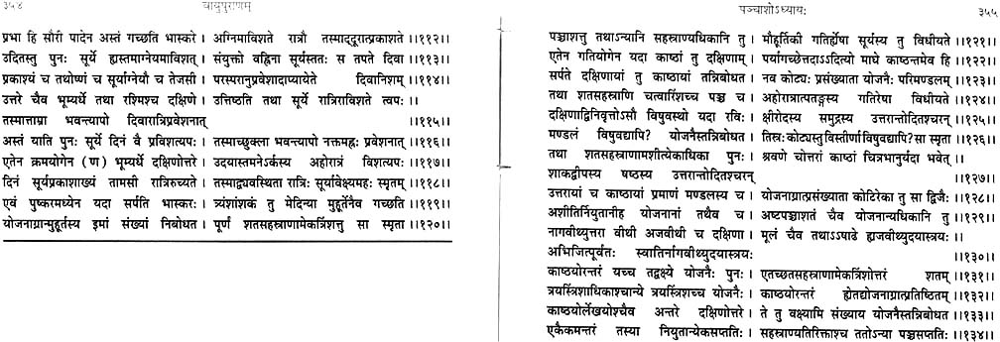
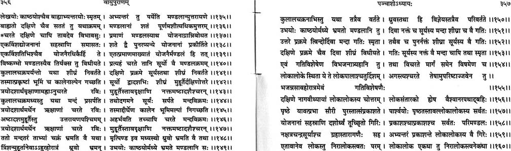
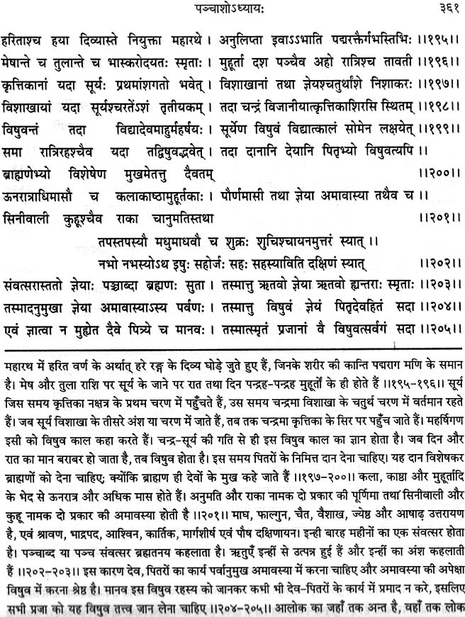

[ Some material on this page is already published original research, which may be cited with acknowledgement. ]
|
Table of Contents
|
Modern Value of Precession in Bhāskaracharya's Work based on Suryasiddhānta
It is propagated no-a-days that ancient Indians had no knowledge of precession of equinoxes which was discovered by Greeks (Hipparchus), and that the trepidating ayanāmsha is an error introduced by fools later. Let us examine it closely.
In the chapter "Direction, Place and Time" (Suryasiddhānta, Ch.iii), E Burgess writes :
Quote: (bracketed words are mine) : The (Surya Siddhāntic) theory which the passage (verses 9-12), in its present form, is actually intended to put forth is as follows : the vernal equinox librates westward and eastward from the fixed point, war Piscium, assumed as the commencement of the sidereal sphere— the limits of the libratory movement being 27 degrees in either direction from that point, and the time of a complete revolution of libration being the six-hundredth part of the period called the Great Age (ie, Mahāyuga as defined by Burgess in chapter i,15-17, where he gave it a span of 4320000 years), or 7200 years; so that the annual rate of motion of the equinox is 54".Unquote:
This is the interpretation of existing version of Surya Siddhānta ( त्रिंशत्कृत्यो युगे भानां चक्रे प्राक्परिलम्बते…, SS,iii.9) in own words of E. Burgess , "as it is actually intended to put forth" by all traditional commentators. This is exactly what I illustrated with example in the illustrated example of computation of ayanamsha.
The moot point is this : Burgess knew the traditional interpretation (भानां चक्रे.., ie pendulum like motion of nakshatra orbit itself) , but gave his own meaning based upon modern concept of precession of equinoxes , and tried to create doubts about the authenticity of these verses (iii, 9-12) by putting forth deliberately false arguments. Let us examine Burgess.
In verse-9 (Suryasiddhānta, Ch.iii), he translates "pari-lambate" as "falls back", although he says lambate means "lag, hang back, fall behind" and 'pari' means "about, round about". Therefore, pari-lambate should have been translated as "fall back roundabout" and not merely as "fall back" according to own logic of Burgess. If the circle of asterisms lags roundabout any fixed point (whether Revati or Chitrā), it is a to and fro motion as all traditional commentators accepted. Modern concept of precession is something different from the original concept of ayanāmsha. Theon in West had mentioned this oscillating motion, Arab astronomers also accepted it, and almost all Europeans accepted it upto Renaissance, after which Hipparchus was rediscovered and modern concept of precession became a well established fact in astronomy. But this concept of equinoctial precession (as well as anomalistic precession) was also known to ancient Indians and Greeks.
Burgess wrongly quotes Bhāskara-II, because he relied upon a wrong translation of Bhāskara by Colebrooke (As. Res., xii 209 ; Essays, ii,374, etc) and did not try to examine Siddhānta Shiromani which was wrongly translated by Lancelot Wilkinson due to Colebrooke's influence. Bhāskara-II did not give his own opinion at all, and merely quoted Surya Siddhānta and Mujjāl (elsewhere Munjāla and Manjula), saying Suryasiddhānta gives -30000 revolutions of sampāt or equinoctial point per Kalpa while ayana has a motion of +199669 revolutions per Kalpa (of 4320 million years). Bhāskara's own opinion was that these should be followed, which means both Surya Siddhānta and Mujjāla were correct in Bhāskara's opinion. Colebrooke, Burgess, Wilkinson, etc have misquoted Siddhānta Shiromani and created an impression that ancient Indians were inept in astronomical observations, as Whitney shamelessly declared in his prologue to Burgess, but the Hindi translation by Satyadeva Sharmā is correct, although he could not get the real meaning.
The startling fact is that Siddhānta Shiromani clearly says that "the point of intersection of equatorial plane and ecliptic" (which is the very definition of equinox) has a negative motion of 30000 revolutions per Kalpa according to Suryasiddhānta, while Mujjala's value of ayana's motion is +199669, and both (Suryasiddhānta and Mujjala ) must be added to get the final motion (of the equinox ). Hence, we get +169669 revolutions per Kalpa, which gives (4320000000 / 169669 =) 25461 years per revolution or 50.9" per year, which is very near to modern value of about 50.3" per year for precession of equinoxes. Fuller discussion of Siddhanta Shiromani's text is given below.
We must not forget that Hipparchus had given a period of 36000 years for precession, which was not corrected by Europeans till the onset of modern age. It is unfortunate that Siddhānta Shiromani is still being misinterpreted by foreigners, and if a true rendering is offered by Indian scholars, they are abused, esp by those who do not care to consult the originals and declare the forign missionaries to reliable. Bhāskara-II neither excluded Suryasiddhānta, nor Mujjāla, but mentioned the both must be used, which is clear from verse-19, where he clearly asks to add Mujjāla's ayana-chalam to Suryasiddhāntic sampāt-chalanam (this sampāt-chalanam is anomalistic precession with a period of 144000 years per cycle, not far from modern value).
Another startling fact is that Bhāskara-ii differentiates sampāt-chalanam of Suryasiddhānta from ayana-chalanam of Mujjāla, and says both must be added before computing phenomena like declension, ascensional differences, etc. But modern commentators like Colebrooke misinterpret Bhāskara-II deliberately, and imply that sampāt-chalanam of Suryasiddhānta quoted by Bhāskara-ii was an erroneous thing which must be forgotten, while ayana-chalanam of Mujjāla was a crude approximation of modern precession. But this interpretation is falsified by Bhāskara's original verses (and his own commentary Vāsanābhāshya) as shown above. The root of this problem lies in the fact that sampāt-chalanam of Suryasiddhānta is a distinct phenomenon from ayana-chalanam of Mujjāla according to Siddhānta Shiromani, but readers are not informed of the real meaning of Siddhānta Shiromani and false quotation from Siddhānta Shiromani was quoted by Colebrooke and Burgess (12th verse, chap.iii). This is a sign of intellectual incompetence and dishonesty of Western "experts" who are blindly followed by brown sāhibs of India. Those who do not consult the original texts cited above will not believe me.
Siddhānta-tattva-viveka by Kamlākara Bhatt is a medieval text, which clearly states that Saurpaksha is distinct from Drikpaksha. Saurpaksha (astronomy of bhuvaloka) is Suryasiddhānta as it exists. Drikpaksha (astronomy of Bhooloka or physical/material/sensory world) is that version of Suryasiddhānta which was not preserved because it was useless in astrology. Siddhānta Shiromani uses many concepts of Drikpakshiya astronomy, as the instance cited above proves. Saurpakshiya Suryasiddhānta does not contain any refence to 30000 cylces per Kalpa mentioned by Bhāskara-II. He was quoting from Drikpakshiya Suryasiddhānta which as a text had been lost ; Bhāskara-II said in his own Vāsanābhāshya commentary of Siddhānta-shiromani that Suryasiddhānta is "āgama". Modern commentators confuse both variants of Suryasiddhānta. Siddhāntatattvaviveka is prescribed in post-graduate (Ganitāchārya) syllabus of Sanskrit universities, but no modern commentator has ever tried to translate it or comment on it.
According to Bhāskara-ii , negative sampāt-chalanam of Drikpakshiya Suryasiddhānta should be added to positive ayana-chalanam of Mujjāla to get final Drikpakshiya precession, which is very close to modern value. Ayana-chalanam of Mujjāla is also Drikpakshiya, because Saurpakshiya entities are not used in Drikpakshiya astronomy, and vice versa. I have put some of the most important extant theorems of Drikpakshiya Suryasiddhānta at a website. I had put parts of it at one of most popular websites, where a German "Indologist" deleted it and abused me profusely ; later I found those deleted materials at an Australian website, without any name of author!!. But I am here divulging one important secret of ancient science of India which has been neglected by wrongheaded commentators.
Mujjāla's ayana-chalanam, as mentioned in Siddhānta Shiromani, gives a period of (4320 million / 199669 = ) 21636 years per cycle. Siddhānta Shiromani says that it is ayanachalanam according to Munjala & his followers but it was not accepted as precession by Bhaskara, precession is obtained after substracting (Saurpakshiya) Suryasiddhāntic sampātchalanam. If this 21636 year cycle is not precession, what is it ??
Readers should read a Wikipedian article Milankovitch cycles ( http://en.wikipedia.org/wiki/Milankovic_cycles ) which informs :"Earth's axis completes one full cycle of precession approximately every 26,000 years (25771.5 precisely at present, 25789.5 years is long term mean). At the same time, the elliptical orbit rotates, more slowly, leading to a 21,000-year cycle between the seasons and the orbit… This orbital precession is in the opposite sense to the gyroscopic motion of the axis of rotation(cf. anomalistic precession as distinct from equinoctial precession), shortening the period of the precession of the equinoxes with respect to the perihelion from 26,000 to 21,000 years." (at some sites of NOAA of USA, 22000 is mentioned instead of 21000)
Ayana-chalanam of Mujjāla is not orbital precession, it is the most important of all components of Milankovitch cycles as this Wikipedian definition shown. If we take cue from Siddhānta Shiromani, the aforementioned Wikipedian clause can be rewritten thus : This orbital precession of equinoxes is in the opposite sense to the gyroscopic motion of the axis of rotation, shortening the period of the precession of the equinoxes with respect to the perihelion from 25771 to 21,636 years.
Siddhānta Shiromani also says that Mujjāla's ayana-chalanam (21,636 years per cycle) is opposite to sampāta-chalanam. Bhāskara-ii clearly defines sampāta-chalanam as "the point of intersection of equatorial plane and ecliptic" (which is the very definition of equinox). Hence, what Siddhānta Shiromani says is exactly what Wikipedia informs us, the only difference is that Siddhānta Shiromani is misinterpreted and declared to be obscurantist, and the great cycles mentioned in Siddhānta Shiromani is "discovered" by 20th century scientists. But we must remember Bhāskara-ii did not discover these things, he acknowledged Suryasiddhānta and Munjāla.
Bhāskara-ii knew Drikpakshiya Suryasiddhānta, which has not survived because it was not useful in astrology. In his formula of precession, Bhāskara-II used a figure 30000 cycles per Kalpa. Bhaskara-II got an approximate value of 50.9" per year, which was the most precise value before modern astronomy developed in the West.
Evidence of Precession from Bhāskara-II's citations of archaic Suryasiddhānta
According to Bhāskara-II, orbital precession is derived by substracting anomalistic precession (sampāt-chalanam) from the first component of Milankovitch cycles (Munjāla's ayana-chalanam). Bhāskara-II acknowledged earlier authors. Hence, we must conclude that modern values and concepts of orbital precession, anomalistic precession, Milankovitch cycles, etc were known to ancient Indians well before Bhāskara-ii.
But two things about confusing terminology must be borne in mind : this sampāt-chalanam he finally gets by combining the two quantities mentioned above. According to Bhāskara-II, Suryasiddhāntic sampāt-chalanam is 30000 per Kalpa. He does not give a name for the term which is finally obtained by combining this sampāt-chalanam with Munjāla's ayana-chalanam, but the definition he provides for Suryasiddhāntic sampāt-chalanam is exactly the definition of the final quantity whose name he does not provide. Hence, there were many types of sampāt-chalanams !! This is not a case of confusion of terms. It is a result of Saurpakshiya term with Drikpakshiya terms bearing same names but having different magnitudes and sometimes even having difference in basic properties !
Second confusion is due to use of the term ayana-chalanam for Munjāla's precession. It is quite distinct from Saurpakshiya Suryasiddhāntic ayana-chalanam (trepidation) as mentioned in existing text. Burgess could not digest this theory of libration (oscillation or trepidation, ie, ayanāamsha - motion) and tried to distort the meaning of terms to fit modern view of orbital precession with this Saurpakshiya precession. Bhāskara-ii knew and respected Suryasiddhānta which he cited and used in his computations as shown above, and gave exact value of Drikpakshiya precession. Therefore, it is foolish to impose Drikpakshiya precession (50.9" per year according to Bhāskara-II, 50.3" really) upon Saurpakshiya ayanamsha (54" per year, oscillating within a range of ± 27 degrees). (There are further corrections on Drikpakshiya precession which give a final value of one revolution in 25771.4 years, exactly equal to the value deduced by NASA - JPL , but these corrections requires some long theorems to prove).
I do not want to say that all ancient texts are true and should be blindly followed. But it is equally wrong to deride them as outdated and obscurantist just because they could not be understood by moderns.We have yet to discover the real Wonder that Is India. Unless and until ancient texts are proven false, it is suicidal to reject them.
Here is the photographed copy of relevant page from Siddhanta Shiromani for those who want first hand proof, followed with discussion on its obscure passages :

vAsanA-bhASHya commentary by Bhaskara-ii on his own work Siddhanta Shiromani has never been translated or explained. Bhaskar-ii knew Siddhanta Shiromani will be misunderstood, hence he wrote its commentary vAsanA-bhASHya himself. This commentary also needs a commentary. In it, Bhaskar clearly writes that "sa evāyam" refers to "krAntipAta" and not to ayanachalanam. If verses 17-19 are taken together, we have six lines, and "sa evāyam" occurs in third line, which says that the ayanachalanam as defined by Munjāla &c is same as krAntipAta defined in first line : his full sentence in vAsanAbhASHya is thus : "sa evAyam krAntipAtaH". Hence, "sa evAyam" is not related to neuter form.
This meaning from vAsanAbhASHya is further reinforced in same passage in vAsanAbhASHya which says that the second line (minus 30000 revolutions per Kalpa) must refer not to krAntipAta but to "motion of apogee" ("tatra mandochcha pAtAnAm gatirasti"). Thus, Bhaskar has made it clear that the definition of krAntipAta as given in first line applies not to -30000 revolutions per Kalpa ( the latter being motion of mandochcha) but applies to +199669 revolutions per Kalpa (="ayam") which is same as the "ayanachalanam" (= "sa") as said by Munjāla and his followers (munjAlAdi means munjAla and others beginning from munjAla, "Adi" means "beginning" ; hence the sense of munjAlAdi is not "munjAla and others" but "munjAla and followers of munjAla").
"tatpakSHe" relates to ayanachalanam. If one Kalpa of 4320 million years is divided with 199669 given by Munjāla, we get one revolution in 21635.8 years, which is equal to annual motion of 59.9 seconds of arc which was rounded to one minute of arc by munjAla (read the footnote of Siddhanta Shiromani's photograph given above which gives the verses from munjAla about precession). Karana texts use crude numbers in order to facilitate panchanga making, and after long time when errors accumulate new Karana texts are made from same Siddhanta (vAsanAbhASHya of verse 17-18 says : "yadA punarmahatA kAlena mahadantaram bhaviSHyati tadA mahAmatimanto brahmaguptAdinAm samAnadharmANa evotpatsyante"). But this crude figure on one minute per year will give 200000 revolutions per Kalpa and not the figure 199669 said by Munjāla. Rationale for 199669 is unexplained. Now, let me summarize the whole issue :
Verse 17 defines krAntipAta, and then gives a figure "minus 30000 revolutions per Kalpa as said in Suryasiddhanta" which Bhaskar elaborates in vAsanAbhASHya to be the motion of solar apogee. The next verse mentions +199669 revolutions of ayanachalanam as said by Munjāla &c, and clarifies that the krAntipAta defined in preceding verse in same as ayanachalanam of munjAla. But Bhaskara does not accept munjAla's notion of krAntipAta and says that real motion of krantipAta should be deduced by combining -30000 with +199669 : this is clear in the third verse (19th) :
"tat-samjAtam pAtam kSHiptvA kheTe-apamaH sAdhyaH // krAntivashAt-charam-udayaAsh-charadala-lagnAgame tataH kSHepyaH"
apamaH means krAntipAta ("the declination of a planet" - Monier Williams). kheTa means "planet". Hence, Bhaskara says : "pAta born out of that / those should be used to deduce declination of a planet".
"tat" normally is singular, but in samāsa it is used for dual and plural too. pAta means the intersecting point of two circles. Hence, here the meaning is thus : the pAta born out of intersection of circles / ellipses of mandochcha and ayanachalanam should be used for computing declination of planets, and phenomena like chara, udayamānas, charadala, lagna, etc should be computed from this final declination. What Bhaskara says is practised by all panchanga makers in India. Chara is a term used for intermediate quantities needed in computation of Sunrise, Lagna (ascendant), etc, and is defined as the difference of rising time a rasi in equatorial plane from the rising time of same rasi in ecliptic.
Bhaskara says pAta born out of "tat" should be used for deducing declination. By definitipon, pAta is a resultant of two entities. Hence, the two entities mentioned in preceding verses must be combimed to give the krAntipAta of Bhjaskar.
Existing Suryasiddhanta does not give a motion of -30000 per Kalpa of any entity, while Bhaskara claims Suryasiddhanta says so. But Bhjaskar says Suryasiddhanta is "Agama" and therefore must be accepted as final proof ("pramANa"). Hence, some version of Suryasiddhanta available to him mentioned -30000 per kalpa as the motion of SOLAR APOGEE. But Suryasiddhanta gives a value of only 387 revolutions for solar apogee, and Siddhantashiromani gives a figure of 480 per Kalpa (verse 5 in bhagaNAdhyAya). Bhaskar's value is +93 more than that given in Suryasiddhanta. Late NC Lahiri wrote in Advance Ephemeris (page 90) that some corrections were needed in Suryasiddhantic figures for making it scientifically correct, and the value of one such term given by him was equal to nearly 109 revolutions per Kalpa, not too far from Bhaskar's beeja correction in Suryasiddhantic mandochcha value. But Bhaskar never said Suryasiddhanta was incorrect. Hence, there were two versions of Suryasiddhanta : one was Drik-pakshiya, ie related to the phenomanal world revealed directly to the senses, and the other was Saurapakshiya manifest only astrologically. Astrologers did not preserve the Drikpakshiya Suryasiddhanta. Bhaskar says Suryasiddhanta's solar apogee has a motion of -30000 revolutions per Kalpa, or a period of 144000 years, which is not too far away from modern value of physical astronomy. Bhaskar also says Suryasiddhanta is itself a PROOF and needs no other proof for its correctness because it is āgama. But the figure of -30000 per kapla is never used in Suryasiddhanta used and preserved by astrologers, and Bhaskar's own value of 480 per Kalpa is also near to this version. Hence, he knew about two versions of Suryasiddhanta. Bhaskara's statement about gravitational force and its proportionality to distance was also related to sensory (i.e., material) world.
Ancient Definition Of Ayanamsha
Suryasiddhāntic Definition Of Ayanāmsha
Ayanāmsha is defined as the difference between Sāāyan and Nirayan longitudes of heavenly bodies . Now-a-days, Sāyan and Nirayan are respectively translated as tropical and sidereal , but their original meanings were different. (See below for definitions of Sāyan and Nirayan and their difference from tropical and sidereal).
According to the older view ayanāmsha can increase from 0° to +27°, after which it starts decreasing to 0° and further to -27°. Then it begins rising again, to 0° and further to +27°. This type of ayanāmsha is known as Oscillation / Libration / trepidation (dolan in Sanskrit). Surya-siddhānta supports this view. Another view is of continuous cyclic change in a circle (actually along the solar ellipse or ecliptic), known as chakrāyana to ancient astronomers of India like Manjula (Munjala). Traditional astrology rejected this cyclic notion. Europe accepted this cyclic theory only at the beginning of Renaissance. Before that, Indians, Arabs and Europeans used the oscillating type of ayanāmsha which was called trepidation in Europe. Its earliest mention in Europe dates back to Theon of Alexandria (in his Small Commentary to the Handy Tables) in 4th century AD. Before that, we have no direct proof of whether tropical or sidereal system was used by Western astrologers or whether they believed in cyclic or oscillating type of ayanāmsha , but there are ample evidences which suggest that Suryasiddhāntic sidereal system and Suryasiddhāntic ayanāmsha was prevalent in Europe and in other countries, a fact not recognized by modern scholars.
Suryasiddhāntic ayanāmsha is computed by multiplying the full cycle of 360° with 0.3, which gives a total range of 108° for one cycle of ayanāmsha, comprising of four stages of 0° to +27°, 27° to +0°,0° to -27° and -27° to 0°.
Brahmasiddhāntic Definition Of Ayanāmsha
Rev E. Burgess laboured hard to convince everyone that Suryasiddhāntic ayanāmsha was a mistake of scribe plus misinterpretation because he wanted to replace it with ayanāmsha based on equinoctial precession, but the the same Suryasiddhāntic ayanāmsha is repeated in Brahma-sidhanta with even more clarity (last five verses in the scanned page below) :
Somasiddhāntic Definition Of Ayanāmsha
Again, the same Suryasiddhāntic ayanāmsha is repeated in Soma-sidhanta (last five lines in the scanned page below) :
Nārada Purāna's Definition Of Ayanāmsha
Nārada-Purāna (poorva-bhāga, pāda-2, verses-133-4 repeats exactly the same Suryasiddhāntic verses of ayanāmsha.. Sometimes many verses are repeated in other Purānas, which induce modern readers to comment that some Purānas are spurious. They deliberately forget that all the Purānas were compiled by the same person Veda Vyāsa Ji, hence sometimes identical verses are found in different Purānas. The basic ideology of Purānas is always the same, which makes modernised 'scholars' uneasy.
Vāyu and Matsya Purāna's Definition Of Ayanāmsha
It is ,therefore, clear that Suryasiddhāntic verses of ayanāmsha are not errors of scribes or mistake of judgment as Rev E. Burgess would make us believe, but deliberately introduced in all archaic texts of astronomy. Most convincing proof is from Vāyu and Matsya Purānas which provide some difficult computations which any novice could not introduce in ancient texts.. It has been discussed here in separate sections.
Suryasiddhantic Ayanamsha in Reanaissance Europe
Following is the scanned image of a page from Ptolemy's Tetrabiblos in which the publisher added in footnote a summarized description of mediaeval Cosmology prevalent in Europe ; I have shaded those portions which define the trepidating ayanamsha in the fashion of Suryasiddhantic ayanamsha. In the West, the earliest reference to trepidation goes back to Theon of Alexandria around 5th century AD. Arabs and later muslim and Christian Spaniards also used it. Incidentally, it also shows that Fixed Stars were used as reference points, with beginning of Mesha and Tula as cardinal points, exactly like the nirayana system of Suryasiddhanta ! Modern Westerners try their best to hide such facts esp from Indians and teach the Indians that Suryasiddhantic ayanamsha is an aberration or a typo error (as Rev E. Burgess wrote).
Evidence of Ayanamsha in Purānas
Nearly similar passages about trepidating precession is contained in many Purānas, and when we make a comprehensive assessment of such passages it is clear Suryasiddhāntic astronomy is fully supported by the Purānas, as shown below.
Evidence of Precession in Vāyu Purāna
Vāyu Purāna (chapter-51, verse-6-7) says the same thing :
योsसौ चतुर्दिशम् पुच्छे शैशुमारे व्यवस्थितः । उत्तानपादपुत्रोऽसौ मेढीभूतो ध्रुवो दिवि ॥ ६ ॥
स हि भ्रमन् भ्रामयते नित्यं चन्द्रादित्यौ ग्रहैः सह । भ्रमन्तम्-अनुगच्छन्ति नक्षत्राणि च चक्रवात ॥ ७ ॥
ध्रुवस्य मनसा चासौ सर्पते भगणाः स्वयं । सूर्याचन्द्रमसौ तारा नक्षत्राणि ग्रहैः सह ॥ 8 ॥
वातानीकमयैर्बन्धैर्ध्रुवे बद्धानि तानि वै । तेषाम् योगश्च भेदाश्च कालाचारास्तथैव ॥ ९ ॥
अस्तोदयौ तथोत्पाता अयने दक्षिणोत्तरे । विषुवद् - ग्रहवर्णाश्च धृवात्सर्वम् प्रवर्तते ॥ १० ॥
वर्षा घर्मो हिमम् रात्रिः सन्ध्या चैव दिनम् तथा । शुभाशुभम् प्रजाणाम् धृवात्सर्वम् प्रवर्तते ॥ ११ ॥
ध्रुवेणाधिकृताम्श्चैव सूर्योsपावृत्य तिष्ठति । तदेष दीप्तकिरणः स कालाग्निर्दिवाकरः ॥ १२ ॥**
The meaning of "उत्तानपादपुत्रोऽसौ मेढीभूतो ध्रुवो दिवि ॥ स हि भ्रमन् भ्रामयते नित्यं चन्द्रादित्यौ ग्रहैः सह ।" is : "Uttanpāda's son Dhruva is the fixed point in the Heavens , round which all planets including Sun and Moon, and Dhruva himself also moves round" . Dhruva has two motions : diurnal motion or rotation as well as trepidating precession round the axis joining terrrestrial poles with celestial pole, as elaborated further in Vāyu Purāna as shown below.
So far, it is not clear whether Dhruva revolves roung some circle or ellipse, or just rotates round the axis of Earth, but one thing is clear : Dhruva is not the North Pole of Earth and is the star either exactly at the celestial pole or near it.
This is clarified in the verse-100 from Vāyu Purāna in the following page, in which Dhruva is defined at the tail-end of Shishumāra as meDhee (मेढी) round which others revolve, but Dhruva himself revolves (प्रदक्षिणम्) round the central pole joining terrestrial Meru (here, it is Sumeru or the North Pole) with the celestial pole ; it is noteworthy that प्रदक्षिणम् is used not for rotation round one's own axis but for revolution round something else , and the term प्रदक्षिणम् also suggests the right-handed (dakshina) direction of revolution as well :
Next Purānic evidence of precession motion of Dhruva from the following 50th chapter of Vāyu Purāna, in which Dhruva is said to possess two different motions : one is its diurnal rotation (as a result of Earth's rotation), and the other is revolution of Dhruva round the circles ("mandalas"). Both these motions are mentioned in verse-149 in the scanned page below (verse-149 means : "Dhruva moves round the Day-night (ahorātra) in 30 muhurtas ; it moves round the Mandalas situated between both directions" ; Hindi translator renders it as thus "ध्रुव तीस मुहूर्तों में एक अहोरात्र का परिभ्रमण कर दोनों दिशाओं के मध्य में स्थित मंडलों की परिक्रमा करता है ।") ; first half of verse-151 repeats the latter half of verse-149 which says Dhruva revolves round the mandalas :
Here, questions may be raised whether these Purānic verses refer to (1) Dhruva's diurnal motion as rotating pole written in a confusing manner as to give the impression of equinoctial precession, which is clearly mentioned, (2) or they refer to circular motion due to equinoctial precession, (3) or they refer to the pendulum-type trepidation mentioned in ayanamsha verses of Suryasiddhanta. Answer to these questions is clearly provided in the following verses which show how the Dhruva revolves round the mandalas. The explanation follows the following scanned picture.
Verse-130 states that Sun's path during the Uttarāyana is called Nāgaveethee, and Sun's path during the Dakshināyana is called Ajaveethee. When Sun rises in three nakshatras from moola to (poorva and uttara) āshādha, it is ajaveethee, and when the Sun rises in three nakshatras from Abhijit (i.e., Abhijit or Shravana or Dhanishthā), then it is Nāgaveethee.
What does it mean ? Uttarāyana and Dakshināyana are here defined not in terms of human Sunrise or Sunset, but divine Sunrise and Sunset. Divine Sunrise occurs when sāyana Sun has longitudes from -27 deg to +27 deg with respect to the mean reference point 270 deg for Mean Divine Sunrise or Uttrāyana-onset, i.e., from 243 deg (Moola) to 297 deg (Uttarāshādha) which is an evidence of both pendulum like motion of Dhruva as well as of trepidating ayanāmsha known as Dolāyana in contrast to circular motion of modern concept of ayanāmsha known as chakrāyana. Although exact degrees are not mentioned in these verses, no other explanation is possible excepting that based on trepidating Dolāyana, which puts nirayana Makara Samkrānti or Divine Sunrise always at 270 degrees and sāyana Makara Samkrānti from 243 deg to 297 deg (that is why Varāhamihira cited Vedānga Jyotisha having Dhanishthā's beginning as onset of uttarāyana). More verses in Vāyu Purāna support this concept of trepidating Dhruva causing trepidating ayanāmsha, as the following scanned picture shows.
Verses 197 to 200 state :
Vishuva-time according to maharshis is when Sun reaches first quarter of Krittikā and Moon in Vishākhā-4, and next Vishuva is when Sun reaches Vishākhā-3 and Moon at the head of Krittikā. Vishuva timing is judged (thus) from Sun and Moon : when day and night are equal then it is Vishuva (which is auspicious for religious acts). Leaving the Moon, let us take Sun's longitudes for Vishuva or divine equinoctial points, which is 26.6667 to 30 degrees (Krittikā-1) and 206.6667 to 210 degrees (Vishākhā-3). Thus, we find here +27 degrees from nirayana Mesha-onset and again +27 degrees from nirayana Tulā onset. In this case, negative ayanāmsha is not mentioned, as in the case of divine solstices. But cumulative evidences of divine solstices and equinoxes clearly give an indication that trepidating ayanāmsha is mentioned in Vāyu purāna, and it is caused by trepidation of Dhruva in a circular path (mandala).
Thus, lengths of divine days and nights are equal on vishuva according to maharshis , but the detailed description of Vāyu Purāna makes it clear that the equinoxes or vishuvas it talks of are not those of the human world, but pertain to the divine because it occurs on sāyaya points which are made by applying trepidating ayanāmsha to nirayana samkrāntis.
Verse-202 mentions the twelve Vedic months which puts the first month of Uttarāyana at Tapa which starts at nirayana Makara Samkrānti as shown above. When we try to understand the connection of lunar longitudes and lunar tithis and months described in Vedānga Jyotisha with the help of these verses of Vāyu Purāna, it is clear that Suryasiddhāntic mathematics should provide the clue to make these things clearer.
Evidence of Precession in Brahmānda Purāna
Here I quote a verse from Brahmānda Purāna (Vāyuprokte-Poorvabhāga, second Anushanga, chapter-22, verses 6-7) which proves knowledge of precession in Purānic times :
उत्तानपादपुत्रोऽसौ मेढीभूतो ध्रुवो दिवि । स हि भ्रमन् भ्रामयते नित्यं चन्द्रादित्यौ ग्रहैः सह ।। ("Uttanpāda's son Dhruva is the fixed point in the Heavens , round which all planets including Sun and Moon, and Dhruva himself also moves round"). Round what ? Mt Meru, which is the only fixed point in Cosmos according to Purānic-epic stories. Hence, the bhachakra also librates with respect to this fixed point Meru , as proven by other Purānic verses shown here. In Brahmānda Purāna, this and related chapters are said to be uttered by Vāyu (cf. Vāyu-prokta), hence I have used Vāyu Purāna as the first source cited above.
Brahmānda Purāna deals with this subject with no less details than Vāyu Purāna, but most of the verses are identical.
Evidence of Precession in Matsya Purāna
Matsya Purāna deals with this subject with even greater details than Vāyu Purāna, but most of the verses are identical. There are some extra points in Matsya Purāna, esp about nine veethees. The verse उत्तानपादपुत्रोऽसौ मेढीभूतो ध्रुवो दिवि । स हि भ्रमन् भ्रामयते नित्यं चन्द्रादित्यौ ग्रहैः सह ।। is in chapter-125, verses 5-6. Last verse in chapter-127 states : "एक एव भ्रमत्येष मेरोरन्तरमूर्धनि । ज्योतिषाम् चक्रम् आदाय आकर्षस्तम् अधोमुखः ॥ २८ ॥ मेरुमालोकयन्नेव प्रतियाति प्रदक्षिणम् ॥ २९ ॥" . It puts the Meru at the centre, and Dhruva moves round the pole which is above terrestrial Meru (actually Sumeru or North pole of Earth).
Matsya Purāna repeats the view of Vāyu Purāna (chapter-124, verses 53-54):
नागविथ्युत्तरा वीथी ह्यजवीथिस्तु दक्षिणा । उभे आषाढमूलम् तु अजवीथ्युदयास्त्रयः ॥ ५३ ॥ अभिजित्पूर्वतः स्वातिम् नागवीथ्युदयास्त्रयः ।
It means : "Northern veethee or path is Nāgaveethee and southern veethee is Ajaveethee. Sunrise (occurs) in any of three nakshatras from moola to both āshādhas which make up Ajaveethee. (And) sunrise (occurs) in any of three nakshatras likewise from Abhijit (to shravana and dhanishthā) which make up Nāgaveethee."
In the human world, Sunrise occurs in all the nakshatras successively throughout the year. Even if we define Sunrise as winter solstice only, it will occur in all nakshatras successively throughout the so-called Great Year of 25771.4 years if it is used to define ayanāmsha. But as in the Vāyu purāna, we are told here in matsya Purāna too that Sunrise may occur only in three nakshatras. Hence, as in the Vāyu Purāna, only the Divine Sunrise can be implied here, and only trepidating ayanāmsha can explain the fixed list of nakshatras here.
Veethee System in Matsya Purāna
In the 27-nakshatra system, there are nine veethees, each clubbed in groups of three nakshatras (numbers indicate nakshatras starting from Ashvini as "1") :
07-09 = Airāvatee veethee
10-12 = Aarshabhee veethee
13-15 = Aja veethee
16-18 = Mriga veethee
19-21 = Vaishvānara veethee
22-24 = Jarad-gava veethee
25-27 = Go veethee
01-03 = Nāga veethee
04-06 = Nāga veethee
In nirayana system, 27 nakshatras can be equally divided into two halves of 13.5 nakshatras in each ayana. 270 degrees being onset of Uttarāyana, 270 degrees is equal to 20.25 nakshatra ,ie, in 21rst (uttarASHADHa). Exactly 180 degrees before it is 6.75 nakshatra, ie, 7th nakshatra Punarvasu which is onset of Dakshināyana.
That is why the list of nine veethees as described in Matsya Purāna starts from 7th nakshatra and this first veethee is called Airāvatee veethee. Its central veethee is Aja-veethee as shown in the list above, hence this entire half circle is also called Aja-veethee. It ends with Vaishvānara veethee and Uttarāyana starts with Jarad-gava veethee. But actual onset of Uttarāyana in nirayana system takes place at the end of first quarter of 21rst nakshatra. But in integral system of veethees and nakshatras, onset of Uttarāyana is regarded with 22nd nakshatra or Jarad-gava veethee veethee because uttarASHADHa is "ashuddha" (incomplete) nakshatra divided into both ayanas. Uttarāyana has, therefore, only four veethees out of nine, although its actual duration is equal to that of Dakshināyana. Secondly, two of its veethees are named "Nāga-veethee" (I am not sure whether this is original nomenclature or corruption of text), hence this entire ayana is called Nāga veethee.
The central veethee of Dakshināyana is Aja-veethee containing 13-15th nakshatras (Hasta, Chitra, Svāti). Chitrā at 180 degrees is the central point of Dakshināyana as well as of Aja-veethee proper. Just opposite to its is the onset of first nakshatra which is onset of Nāga-veethee proper and it is also the central point of Uttarāyana.
Nakshatras in Mrigaveethee and Vaishvānaraveethee are not mentioned, I have filled in the blanks to complete the picture.
I want to get manuscripts and various publications of Matsya, Vāyu and other Purānas to get the fuller picture. It is not clear to me what was the real importance of veethee system, but it seems these verses were parts of original siddhanta (there was only one original siddhanta with temporal variations with various names on account of beeja corrections).
Analysis of Puranic References to Ayana Points
BS (Brihat Samhita) 3.2 clearly states that Ayanas (Dakshināyana and Uttarāyana respectively) start with initial points of Karka and Mriga (Makara), other wise it is "Vikriti" (aberration).
But in BS-3.1 he said that Poorva-shāstra said ayanas started 23.degrees after those points which he found in his own time.
In his time, ayanamsha was almost zero (exactly zero in 499 AD according to all siddhantic and Puranic definition of ayanamsha formula). Therefore, sāyana and nirayana ayanas coincided. Varahamihira used observational method which is clear in BS-3.3, which yields sāyana ayanas.
But the "Poorva-shāstras" (he is using plural here : "Poorva-shāstreshu") he refers to had different values of Ayana onset points. Vedānga Jyotisha states ayana points 23.3 deg after the nirayana points.
Vāyu Purāna provides the solution, as clarified previous section above. These Puranic references are about precession, but about diurnal motion of the Pole, because Purānas use the term "Pradakshinā" which means revolution round some central point, and not rotation on one's own centre or axis.
BS-3.1 and BS-3.2 makes it clear that ayana points were shifting if they are measured in sāyana terms as clarified in BS-3.3 which is observational. Yet Mr Koch says ancient Indians were not aware of precession !
Vāyu Purāna clearly states the ranges in which sāyana Ayanas must remain confined while moving in āyana terms, and this range must be from Moola to before Abhijit in Uttarashādha for Uttarāyana onset(240 to 276.67 deg ; cf verse 130 in Vāyu Purāna's scanned image above. Vedānga Jyotisha, however gives Onset of Dhjanishthā for Uttarāyana Onset. Therefore, these sāyana points are plus or minus 27 degrees from nirayana 270 deg or Makara-onset as clarified in Narada Purāna and all siddhantas more clearly.
This article provides clear evidences that Ayanas were always measured in terms of Divya Dina and not in human Kālamāna, although human kālamana were often used to observe actual Ayanas, as mentioned in Vedānga Jyotisha or in BS.
Therefore, precession was known to ancients, but this precession was Trepidation of Bhachakra (=Dolāyana) as mentioned in all siddhantas and Narada Purāna, and not the modern concept of Chakrāyana (circular motion of equinoxes or solstices). But the latter was also known to ancients, as shown in the section on Bhaskara-ii above.
The problem with modern scholars is that they choose references selectively, according to their biases. The evidence of Vedānga Jyotisha is used by them to put these texts in 14th century BC. But the same method will put Vāyu Purāna in remote antiquity because Vedānga Jyotisha shows Sāyana Ayanas to be 23.3 deg ahead of nirayana 270 deg, while Vāyu Purāna shows before nirayana 270 deg ! With respect to Vedānga Jyotisha (293.33 deg, = 1387 BCE if zero ayanamsha is of Lahiri's), Uttarayana of Vāyu Purāna (from 240 to 276.667 deg) was minus 53.33 deg to minus 16.667 deg. Therefore, applying modern rate of annual precession (which modern scholars use), the range mentioned in Vāyu Purāna must be dated to from 3821 years before Vedānga Jyotisha to 1194 years before Vedānga Jyotisha. If Vedānga Jyotisha is dated to 14th cen BCE, then the ranges mentioned in Vāyu Purāna show they are based on observations made from 5207 BCE to 2581 BCE !! That is why Mr Dieter Koch dosmisses the verses of Vāyu Purāna as being corrupt. But the summarised verses aof Vāyu Purāna are supported by more detailed evidences of Matsya Purāna. Careful examination of the list in Matsya Purāna in the context of verse 140 in Panchāsa chapter of Vāyu Purāna clearly prove that Ayana onsets were restricted to meeting points of both larger sets of Veethis : Nāga-veethee and Aja-veethee which contain smaller veethees within each larger sets. Therefore, the verse of Vāyu Purāna is not wrong. Even according to Suryasiddhanta and other siddhantas and Narada Purāna, these verses would place Vāyu Purāna from 4942 BCE to 2398 BCE ! Such remote dates are unacceptable to Westerners, hence they ignore these references, because they had declared that all Purānas are false myths so that entire India history could be re-created according to Western prejudices.
Modern Re-definition of Ayanāmsha
Now let us define the term 'tropical' (sāyana in Sanskrit) according to modern science. Due to tilt of Earth's axis, Earth's equatorial plane makes an angle with Sun's ecliptic plane. There are two points at which Earth's equatorial plane intersects Sun's ecliptic plane. These two points are called equinoxes. When tropical Sun reaches the equinoxes, its apparent path of revolution (ecliptic) with reference to the Earth coincides with Earth's equatorial plane. Day is equal to night then. When Sun reaches to its northernmost declination upto Cancer or southernmost declination upto Capricorn, points on its ecliptic plane are called solstices : summer solstice and winter solstice. Regions between these two latitudes,Cancer and capricorn, are called tropics.
Due to oscillation of Earth's axis, its equatorial plane oscillates with respect to Sun's ecliptic plane. Earth's axis rotates in a circle once in 25771.4 years. Therefore the intersecting point of Earth's equatorial plane also rotates with respect to the ecliptic once in 25771.4 years. These two equinoctial points, vernal and autumnal, precess with respect to fixed stars due to gyration of Earth's axis. As a result the timing to Sun's maximum shift (i.e., declination or Krānti) northward upto cancer and southward upto capricorn also precesses.
Due to this precession of the equinoxes, constellations of stars appear to shift with respect to the equinoxes over time, at the rate of 360° in 25771.5 years or one Sign of 30° in 2148 years. In 285 AD, sidereal signs of Jyotisha are believed to coincide with tropical signs. Hence ayanāmsha was zero. This is the measurement of N. C. Lahiri, hence it is called Lahiri ayanāmsha, although this method of defining ayanāmsha was initiated long ago by persons like Colebrooke on which basis Chitrā-pakshiya ayanāmsha was proposed by Ketakar brothers decades before NC Lahiri.
During 17 centuries after 285 AD, equinox has shifted away by over 23°. Hence present value of ayanāmsha is held to be over 23°. It will continue to increase due to continuous shift in equinox, and there is no question of oscillation of equinox within ±27°. So far modern view seems flawless. But this is not ayanāmsha at all. What these "scientific" persons miss is that ayanāmsha is not a concept of modern science. A professional astronomer does not know anything about ayanāmsha. Astronomers work with tropical system. The problem with tropical system is that present tropical position of heavenly bodies cannot be compared with past tropical position of heavenly bodies, because the difference will also contain precession. Sidereal system is more suited for scientific purposes. But modern science arose out of mediaeval astrology of Europe. Sidereal system records the actual motions of bodies.
If we accept the views of persons like Lahiri and impose modern astronomy upon astrology, the ancient treatises of Phalita would also need to be revised. Many enthusiasts are already engaged in this job, which was reserved only for the enlightened Rishis in ancient times. Material planets have no power over destinies of living creatures. Gravitational or magnetic forces have no power to define our future. It is also not possible to propitiate material bodies by chanting hymns. Materialist Astrology is not only a pseudo-science, it is also a pseudo-religion too.
The rules of Phalita Jyotisha were formulated according to sidereal system. These rules have withstood the test of time over millenia. Tropical signs (rāshis) and houses (bhāvas) now differ from sidereal ones by nearly 23°, increasing at the rate of over 50" per year. The rules of Phalita Jyotisha cannot be rewritten according to the tropical system.
At around 499 AD according to Indian system and around 285 AD according to modern re-definition of ayanamsha based on equinoctial precession, the value of ayanāmsha was zero, after which it began rising. Therefore tropical and sidereal positions of planets coincided. As a result many astrologers began using tropical system in succeeding ages. We have ample proof of the fact that sidereal system was used by Europeans before 300-400 AD, after which confusion arose due to negligible difference between tropical and sidereal. This problem was componded by the ignorant astrologers of Europe during Dark Ages. Western tropical astrology is a product of Dark Ages and scientists are not wrong in declaring it pseudo-science.But Vedic Astrology is not a pseudo-science, because it produces true results.
=================== ================== ===================
Some astrologers are perplexed with myriads of varieties of ayanamsha cropping up every now and then. Questions about ayanamsha have been raised countless of times ever since a difference between traditional Suryasiddhantic ayanamsha with so-called Lahiri ayanamsha was recognized.
Jhora software of PVR Narasimha Rao gives an option of choice among 18 types of ayanamshas, mostly taken from SwissEph of Astrodienst. Sadly, traditional value of ayanamsha (Suryasiddhantic, adopted by Aryabhatta too) does not find a place among these 18 choices ! Among these 18, the value given by J N Bhasin comes closest to traditional value which this country believed in ever since Jyotisha was discovered, and even today majority of pandits adopt this traditional value. Why this traditional value should not be given even as a choice among 18 alternatives in modern softwares is beyond comprehension.
Ayanamsha is not a modern (Western concept), and to give a modern meaning to a traditional concept without even citing the traditional views and values is not good.
Traditional value of ayanamsha is zero for AD 499 with an annual rate of change at +54" per year after this date. This annual rate is different from the modern value of precession of equinoxes at 50.253" per year. But traditional definition of ayanamsha is quite different from modern view about precession of equinoxes . This is where Lahiri erred, he accepted the medieval view of Manjul which equated the definition of ayanamsha with precession, although Manjul's views were never accepted by mainstream astrologers of medieval India. Traditional view is based upon Suyrasiddhanta, which regards ayanamsha as a cyclic phenomema, its value gyrating between +27 and -27 degrees as max and min limits, whereas precession results in a difference of +90 and -90 degrees between tropical and sidereal. The root of modern (Lahiri's) view is equating nirayana with sidereal, while traditional view was nirayana as fixed Aakāsh (Sky) and not as Spica or any other star. Suryasiddhantic theory views nirayana universe (Bhuvaloka) as fixed, while the material universe (Bhooloka) is rotating on its axis vis-a-vis the fixed universe (Bhuvaloka). Its mathematics is highly complicated. It is wrong to use traditiotional ayanamsha without traditional definition and theory. Either one should discard the very notion of ayanamsha and stick to tropical system which is the only choice for all modern scientists, or we must rehabilitate ancient notion of ayanamsha, at least as an option worth testing in astrology.
Incompatibility of Modern Definitions of Ayanamsha with Ancient Definitions
Longitudes of stars assumed to define Nakstaras and Rasis of indian Nirayana system in 3000 BC and 2000 AD on Vernal Equinox day for New Delhi :
| Change in Longitudes of Chitra and Revati | |||||||
|---|---|---|---|---|---|---|---|
| Star | Modern Name | BC-3000 | AD-2000 | Total Motion | |||
| Spica (Chitra) | alVir | 142°34'03.3290 | 203°50'23.7778 | 61° 16' 20.45 | |||
| (Revati) | zePsc | 285°51'14.6226 | 019°52'39.5216 | 94° 01' 24.90 | |||
By the mean rate of annual precession, ayanamsha should have changed by 69° 47' 45.14 during 5000 years. But various stars show different values of ayanamsha change. Some moderners regard Zeta Piscium as Revati which should always be at nirayana 359° 50' according to traditional definition, adding 10' to it will give us start of Mesha. NC Lahiri regarded Chitra as Spica, which should always be at nirayana 180 degrees. In 3000 BC, Chitra was 216° 32' 48.71" ahead of Meshaarambha (+10' to zePsc), while in 2000 AD, Chitra was 183° 47' 44.26" ahead of Meshaarambha according to NASA Ephemerides compressed by Astrodienst's Sweph. But whether we use Tropical or Nirayana, Chitra must be always exactly 180 degrees ahead of Meshaarambha. Sweph software is freely available online and anyone can check it. Modernists will ignore such discrepancies by simply abusing all ancient texts as stating that they were highly crude in observations. Crudeness in observation can be 1 deg or 2 deg, not 30 degrees !! During 5000 years, the discrepancy between relative position of Spica with reference to zePsc increased by 32° 45' 04.45", which means that even at the time of Varahamihira's Panchasiddhaantikaa in 505 AD, there should be an ERROR of 9° 47' 33.43" !! Can we accept that astronomers like Aryabhataa (who wrote in 499 AD) and Varahamihira erred by ten degrees in observations ? The implication is clear : if we use physically observed planets and stars for re-defining ancient texts, we must accept that all ancient Indians were perfect IDIOTS who made huge errors in observations, and therefore only idiots should follow their astrological texts. Hence, astrology must be discarded.
OR, if Jyotisha is a correct discipline, we must at least test the original computations of ancients who clearly declared that observed planetary positions should not be used in astrology.
Discovery of Equinoctial Precession by Hipparchus ( ? )
Toomer's translation of Ptolemy's Almagest book-iii, provides apparently "scientific" analysis of observations spread over many centuries, leading to the conclusion that Tropical Year had a length of 365.2466666666667 (365.25 minus 1 / 300 ; cf. page 137 bottom). The fact is he made no observations, as is clear from the following analysis.
During 300 years, the deficit of tropical year from 365.25 day year-length would accumulate to 2.34036556 days, but Ptolemy found a deficit of only 1 day during 300 years, claiming he used observations carefully based on instruments, such as bronze ring Square Stoa in Alexandria to measure equinox timings. Thus, instead of 2.34 days, he found exactly 1 day deficit, an error of 1.34 days or over 32 hours in observation of equinoxes and solstices by Ptolemy ! But I calculated the Sunrises just before and after the vernal equinox in 150 AD at Alexandria and found that the timing of Sunrise changed by 79 seconds in one day. Is it possible to believe that Ptolemy made such huge errors in measurement of either Sunrise on two successive days using instruments or of equinox timing by means of Square Stoa, esp when this measurement was crucial for the measurement of vernal equinox timing ? The reason why he 'erred' lies somewhere else, shown in the next point.
This length of 365.2466666666667 days is exactly the same as the year of Romaka Siddhānta, according to which there should be exactly 1040953 days in 2850 years, having 35250 lunar months (there may be negligible errors which would have practically no effect on short term needs of almanac making).
If we use modern astronomy, we get 1040953 days and 5.3 hours, and if we use Suryasiddhānta, we get 1040953 days and 5.4 hours during 35250 lunar months. Omitting ~5 hours, we can take 1040953 days in 35250 lunar months. Using modern astronomy, there are 2850.03486 tropical years and 2849.9244 sidereal years (and 2849.9057 Suryasiddhāntic years), which may be rounded off to 2850 years using the karana method which gives correct ahargana (count of days) if used for a few centuries, because ahargana is always rounded off to nearest integers in almanac making karana methods. Romaka Siddhānta is a karana method and not a real siddhānta because it uses some nearby year for computations according to Varāhamihira. Thus, we get 1040953 days in 2850 years, giving a year length of 365.2466666666667 days.
Hence, the year length of Ptolemy was actually the year derived from synchronization of 35250 lunar months with nearest number of solar years for the purpose of preparing luni-solar almanacs through crude karana method, which came to be known as Romaka Siddhānta to Varāha Mihira who must have learnt it through Indo-Greeks. It is noteworthy that ahargana count in Romaka Siddhānta mentioned in Panchasiddhāntikā is done for Yavanapura whose longitude and latitude as given by Varāhamihira match with those of Alexandria. Hence, Varāha Mihira's Romaka Siddhānta originated in Alexandria. Although no manuscript of Romaka Siddhānta is now extant from Alexandria, Ptolemy's year length is exactly that of Romaka Siddhānta.
Hence, Ptolemy used this wrong year length, which was neither tropical nor sidereal but based on luni-solar year of a crude method, to show that he discovered this year-length for tropical year by means of careful observation with the help of instruments and using 300-year old records of observations ! What a lie , which went unnoticed for two millenia ! Ptolemy has earlier been charged as the most successful and clever fraud in world history by Prof R R Newton and others (incl. Tycho Brahe) for his false "observations" concerning the star catalogue. And on the basis of this spurious evidence provided by Ptolemy, we are taught that Hipparchus "invented" equinoctial precession. The fact is that the so-called tropical year of Hipparchus was actually not tropical but the year used by luni-solar almanac makers, which was shorter than 365.25 days, while the prevalent sidereal year was longer than 365.25 days.
19-year luni-solar cycle is used by luni-solar almanac makers in all parts of the world, from Meton in 432 BCE in to India. 19 solar years have 235 lunar months with slight error. Multiplied with 150, it gives the cycle of 2850 used in Romaka Siddhānta in which the error is greatly reduced. Unfortunately, Ptolemy and perhaps Hipparchus assumed it sincerely to be a real solar year due to misinterpretation of tradition and then arrived at the wrong conclusion that it must be the length of tropical year because sidereal year in all almanac systems always was larger than 365.25 days. Therefore, what is flaunted as discovery of equinoctial precession was actually based on an error in understanding traditional almanacs of Greece, which were used there at least from the time of Meton, if not earlier. Perhaps, this system was borrowed by them from Mesopotamia, through Chaldeans.
Another Evidence of Ptolemy's Fraud
On page 138 in Toomer's translation of Almagest, Ptolemy cites Hipparchus saying that spring equinox took place on "at dawn" on 24th Mar 145 BCE, and 285 years later Ptolemy found spring equinox at "approximately one hour after noon" on 22 Mar 140 AD. It is interesting to note that Ptolemy chooses exactly one tenth of Romak Siddhānta's cycle of 2850 years : 285 years. According to Romaka Siddhānta, there should be 3525 lunar months in 285 solar years. 3525 lunations would give 104095 days plus 7.74 hours. In 145 BCE, equinox occurred at dawn, and add 7.74 hours to get equinox timing at about 13 pm in 140 AD !! Use of wrong tropical year should have given him 30.56 hours of error in equinox timing, but he got the equinox timing through supposedly actual observations made by Hipparchus and by himself just at those very moments which would have been deduced mathematically by wrongly assuming the luni-solar year of Romaka Siddhānta to be exactly equal to tropical year. This was not an error in observation, but a deliberate fraud : proving a wrong assumption by means of false claims of observations ! It shows Ptolemy assumed, wrongly, that the luni-solar year of 2850-year Cycle was actual tropical year, and then manufactured observational evidence to show off his discoveries.
Modern methods also show that the timings of equinoxes reported by Ptolemy were wide off the mark ! On the same page and next one, Ptolemy writes about more observations of solstices to derive same conclusions about the length of tropical year, citing Hipparchus too. All these equinoxes and solstices reported by Ptolemy are false, they do not tally with actual events but tally with Romaka luni-solar cycle admirably.
Similar errors in understanding ancient astronomy is displayed by almost all modern 'experts' who have never tried to understand the working of traditional almanac making processes. The most glaring example is their inability to understand the intricacies of karana method which leads them to invent many non-existent siddhāntas, such as the imaginary 'Old' Suryasiddhānta of Varāhamihira or Aryabhatiya, which were actually short term crude karana versions of Suryasiddhānta.
In Almagest-Book 3-section 2, there is a Table of Sun's Mean Motion , having a negative annual rate of 0° 14' 35" 14'" 38"" 51""' 25""" ( = minus 0.24312336859139231824417 degrees or plus 359°:45':24":45"':21"":08""':35""") .
According to Ptolemy, it was derived thus :
His Tropical Year of 365.246666667 days (365d:14:48 ) gives daily angular motion of 0°:59':08":17"':13"":12""':31""". Then, Ptolemy says : multiplying it with 365, the number of days in one Egyptian year, we get the mean annual motion as 359°:45':24":45"':21"":08""':35""" ,which is same as minus 0° 14' 35" 14'" 38"" 51""' 25""".
Hence, Ptolemy's Mean Sun's Motion is actually Romaka Siddhānta's Mean Sun's motion, which Ptolemy assumed to be same as the tropical Mean Sun.
It is noteworthy that according to Ptolemy, the difference in motions of his tropical Sun's motion and sidereal Sun gave a rate of one degree per century, or a period of 36000 years for one full cycle of precession of the equinoxes, whose discovery he attributes to Hipparchus.
Practical Method Of Computing Siddhāntic Ayanāmsha
I am here presenting the actual method of computing Suryasiddhāntic ayanāmsha for mean nirayana Mesha Samkrānti of 2009 AD (16Apr). In a mahāyuga of 4320000 years, there are 600 librations/trepidations of bha-chakra, one libration in 7200 years, upto a maximum of +/- 27 degrees. Nearly 3893109 years have passed since this mahayuga began (mean mesha samkranti of 2009 AD). Hence, (3893109 / 4320000 =) 90.11826263888889 % of a mahayuga has passed. Therefore, out of 600 librations in a mahayuga, 540.7095833333 librations have completed. Leaving aside 540 complete librations, we are left with a fraction 0.7095833333, which must be converted into degrees. How ?
Multiply a full cycle with 3/10, you will get 108 degrees. It is one full libration. It resembles a sinewave crudely, ie, having a positive half cycle of 3600 years and an equal negative half-cycle. First, ayanamsha rises from zero to +27 degrees, then gets down to zero again. It is positive half-cycle. Then it moves to -27 degrees in 1800 years and again to zero in next 1800 years. This is negative half cycle of 3600 years, with an annual motion of 54" in 365.258756481481481481 days.
From the fraction 0.7095833333, let us substract 0.5 for the positive half cycle which ended in 499 AD, which was the zero date for Aryabhatiya. Thereafter, negative half-cycle behan, which will attain its nadir of -27 degrees in AD 2299. We are left with 0.7095833333 - 0.5 = 0.2095833333. Since one libration is equal to four quartets of 27 degrees each, a total of 108 degrees, 0.2095833333 libration is equal to - 22.635 degrees, or 22:38':06". It is negative.
Conclusions
Many persons are being deluded by wrong headed commentators like Reverend Burgess or Mahavir Prasād. These commentators could not understand the intricate mathematics of Suryasiddhanta . Burgess admitted that he could not understand the logic behind four samskaras needed to make a true planet out of mean. No commentator has ever published the real formulas.
Maya was not a mlechchha, but an asura who attained brahma-jnāna ("rahasyam brahma sammitam", cf. last verse of SS) by means of tapasyā and taught Jyotisha to rishis. Asuras were also part of Indian culture, only their religion was anti-Vedic. But Maya worshipped Vedic god Surya and obtained, among other shāstras, the ULTIMATE knowledge about Jyotisha (brahma jnāna). It is not my view, but the initial and final shlokas of Suryasiddhānta say so. Brahma-jnāna is not a mere knowledge of planetary positions, otherwise every fool would obtain brahma-jnāna by sitting at a computer or visiting a planetarium. Jyotisha is a non-physical science of hidden things which guide destinies of men and nations, besides weather &c.
It is foolish to believe that the concept of ayanamsha is a later invention. What modern commentators are failing to recognize is the fact that ayanamsha has nothing to do with precession of equinoxes. The latter has no relevance in Vedic Jyotisha based upon ancient texts like Suryasiddhanta, other ārsha siddhāntas and Purānas. Proof of Vedic Jyotisha lies in the efficacy of its predictive part : phalita. Unfortunately, materialists are refusing to accept the existence of a bhuvaloka of deities, and are hoping to get benefits of Jyotisha at the same time!
Suryasiddhanta has two aspects : Saurpaksha and Drikpaksha. First is the mathematics of bhuvaloka needed in astrology, second deals with physical world. Both aspects of Suryasiddhanta were in full bloom, but due to uselessness of Drikpaksha (ie, physical astronomy), its manuscripts were not preserved. But all is not lost. All major astronomical constants of modern astronomy can be deduced by means of Saurpakshiya mathematics, without any obcervation of heavenly phenomena. Salient points of this Vedic Science was published in Hindi three years ago, but is now our of print. It is being translated.
Here, I am giving a simple instance of the magic of Suryasiddanta. Paramkrānti (max. declination) has a value of 24 degrees exactly in Suryasiddhanta . Due to a 12 degree shift between Saurpaksha and Drikpaksha ecliptic planes, you need to multiply Sine24 with Cos12 (or Sin78) degrees, and then take the arc of resultant, which is the maximum Drikpakshiya declension of modern astronomy , 23:26':37.48" . Now-a-days, nutation is negative, slightly less than its maximum value of -17". Substract nutation, and you will get absolutely accurate value of declension of modern physical astronomy correct upto fraction of a second of arc. So simple (and cheap), yet so superb a science in those days !
But we must not use this drikpakshiya value in astrology, otherwise we will get wrong results in Phalita. That is what the likes of all followeres of Lahiri are doing today.
-Vinay Jha